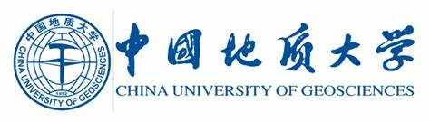

Xianzhe Peng | 彭贤哲
Ph.D. Candidate in Nanjing University
|
Welcome to
Xianzhe Peng's Homepage!
欢迎来到彭贤哲的主页!
Xianzhe Peng | 彭贤哲
|
|
|
|
Ph.D. Candidate,
School of Information Management,
Nanjing University, No. 163 Xianlin Road, Qixia District, Nanjing, China, 09/2021-present,
supervisor: Prof. Shi Jin |
|  |
M.Sci., Geology,
School of Earth Sciences ,
China University of Geosciences, No. 388 Lumo Road, Wuhan, China, 09/2017-06/2020,
supervisor: Assoc. Prof. Guoqiao Xiao, co-supervisor: Research Fellow
Ao Hong |
B.Eng., Petroleum Geology,
School of Geosciences,
Yangtze University, No. 111 Daxue Road, Caidian District, Wuhan, China, 09/2013-06/2017 |
Scientometrics | 科学计量
Knowledge Organization | 知识组织
Bibliography | 目录学
Science and Technology Information | 科技情报